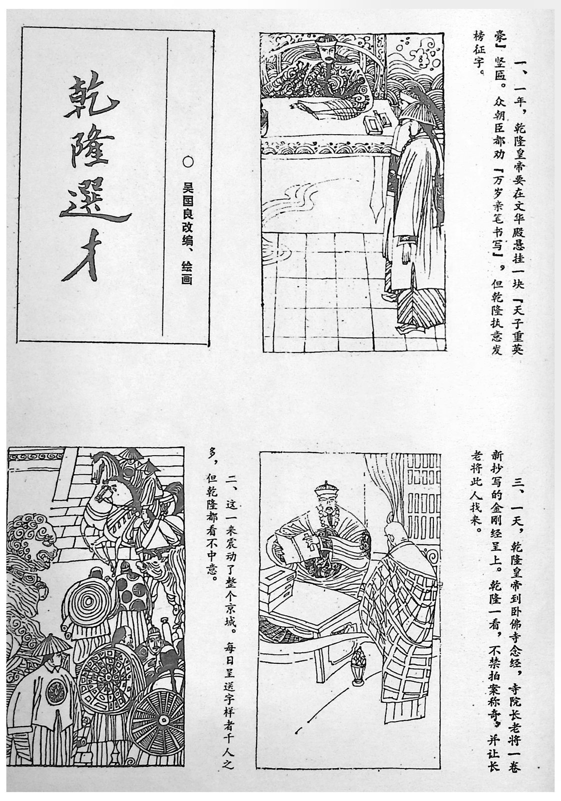

吴国良改编、绘画 《人事》1987年第6期（总第21期），封二
乾隆选才
Qianlong Chooses Talent
- Panel text
- 一、一年，乾隆皇帝要在文华殿悬挂一块「天子重英豪」竖匾。众朝臣都劝「万岁亲笔书写」，但乾隆执意发榜征字。
1. One year the Qianlong emperor wanted to hang a vertical plaque reading “The Son of Heaven values heroes” in the Hall of Literary Glory. All his ministers urged, “Let Your Majesty write it yourself,” but Qianlong insisted on posting a notice inviting calligraphy. - 二、这一来震动了整个京城。每日呈送字样者千人之多，但乾隆都看不中意。
2. This caused a stir throughout the capital. As many as a thousand people a day submitted samples, but none of them satisfied Qianlong. - 三、一天，乾隆皇帝到卧佛寺念经，寺院长老将一卷新抄写的金刚经呈上。乾隆一看，不禁拍案称奇，并让长老将此人找来。
3. One day, when the emperor went to the Temple of the Reclining Buddha to recite sutras, the abbot presented him with a newly copied scroll of the Diamond Sutra. At one look Qianlong slapped the table in amazement and told the abbot to find the copyist.
- 一、一年，乾隆皇帝要在文华殿悬挂一块「天子重英豪」竖匾。众朝臣都劝「万岁亲笔书写」，但乾隆执意发榜征字。
- Description
- Picture story, part 1: the Qianlong emperor insists on choosing the calligrapher for a palace plaque by open competition; thousands submit samples, none pleases him, until he sees a sutra freshly copied for a temple abbot and sends for its writer.
- Note
- The story turns on Fang Guancheng (1698–1768), who later served as governor-general of Zhili. The episode is a popular legend, not documented history.
- Artist
- Wu Guoliang 吴国良 (adapted and drawn)
- Published in
- 《人事》1987年第6期（总第21期）, inside front cover
- Themes
- Talent and its neglect · Exemplary history · Picture stories (连环画)

Cite
Wu Guoliang, “乾隆选才” [Qianlong Chooses Talent], Renshi (Personnel) 《人事》, 1987, no. 6, inside front cover.